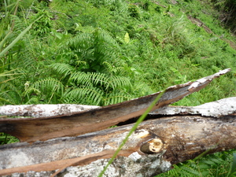

linas 
/linas/
n.
a tree bark (used for walling houses)
Ka seini ne lalag iyan sika se luwit te kayu ne eggamiten te me kabuybuyahan ne ig-alabat te baley wey egkaayun degma ne igtemeg seini.
Kuwa ke pa te linas te kayu ne igtemeg ta.
Kindly get a bark of the tree for our fuel.
Eng. bark; wall, bark
OCM: Ethnogeography (823)
DDP: Parts of a plant (1.5.5)
Online dict status: -
Usage level: MT
1.
v.
for someone (eglinas, miglinas, inlinas/piglinas, agent, eg><ø-) to skin (eglinasan, miglinasan, inlinasan, patient, eg><an-) a log (iglinas, instrument, ig><ø-) with something
Eglinas e pad te kayu su ig-alabat ku te baley ku.
I am going to skin a wood for my house wall.
Kenè eglinasan ka kayu kahi ni amè te neuyag pad su su mareet kun seini te kanta ne pegtuu.
According to my father when he's still alive that we should not skin a tree for it is not good according to our belief.
Kenè niyu gamita ka ugpit ku su iyan ku iglinas te kayu ne ig-alabat ta.
Don't use my bolo because i will use that later to skin a tree for our wall.
Eng. skin, to
Online dict status: -
Usage level: R
Updated by: RJH,QDL
Last updated: 10/Nov/2009
This page last updated: 19/May/2012
Copyright © 2009-2010, Matigsalug Language Christian Association, Inc